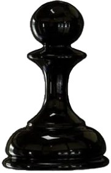

أعضاء مجلس الأدارة واللجنة التنفيذية

رئيس مجلس الأدارة
ا / فيصل الكندرى

رئيس مجلس الأدارة
ا /خالد المطيري

رئيس مجلس الأدارة
ا / أمل الكوت

نادي الكويت للألعاب الذهنية هو مركز رياضي متخصص يُعنى بتطوير وتنمية الألعاب الذهنية، وعلى رأسها الشطرنج والبريدج، إلى جانب مجموعة من الألعاب الفكرية الأخرى. يهدف النادي إلى نشر الثقافة الذهنية، وصقل مهارات التفكير والتحليل، وتوفير بيئة محفزة تجمع بين التعلم والمنافسة لجميع الفئات العمرية.

.svg)
العمل على جعل دولة الكويت مركزًا متقدمًا لرياضة الشطرنج على المستويين الإقليمي والعالمي، عبر اكتشاف المواهب الواعدة، وتطوير قدرات اللاعبين، ودعم المشاركات الدولية، بما يرسّخ مكانة الشطرنج كرياضة ذهنية تعزز التفكير التحليلي، والانضباط، والإبداع.


نلتزم بتطوير رياضة الشطرنج في دولة الكويت من خلال بناء منظومة متكاملة ومستدامة تدعم التميز، وتنظيم بطولات محلية ودولية، وتأهيل كوادر وطنية قادرة على المنافسة في مختلف المحافل. كما نحرص على توسيع الشراكات مع الجهات المعنية محليًا ودوليًا، بما يسهم في توفير بيئة رياضية متقدمة تواكب أعلى المعايير العالمية.
تأسس نادي الكويت للألعاب الذهنية انطلاقًا من إشهار الاتحاد الكويتي للشطرنج بقرار وزير الشؤون الاجتماعية والعمل رقم (17) لسنة 1977، الصادر بتاريخ 23 أبريل 1977، وفقًا لقانون الأندية وجمعيات النفع العام، وتم نشر القرار في الجريدة الرسمية.
وخلال أكثر من عقدين من النشاط، أسهم الاتحاد في تنظيم والمشاركة في العديد من البطولات المحلية والدولية، وكان له دور فاعل في تأسيس الاتحاد العربي للشطرنج والانضمام إلى الاتحاد الدولي للشطرنج عام 1980. وفي عام 2000، تم دمج لعبة البريدج مع الشطرنج تحت مظلة نادٍ متخصص، ليصدر لاحقًا قرار بإعادة إشهاره كنادٍ رياضي متخصص في الألعاب الذهنية تحت إشراف الهيئة العامة للشباب والرياضة.

.png)
.png)
.png)
.png)